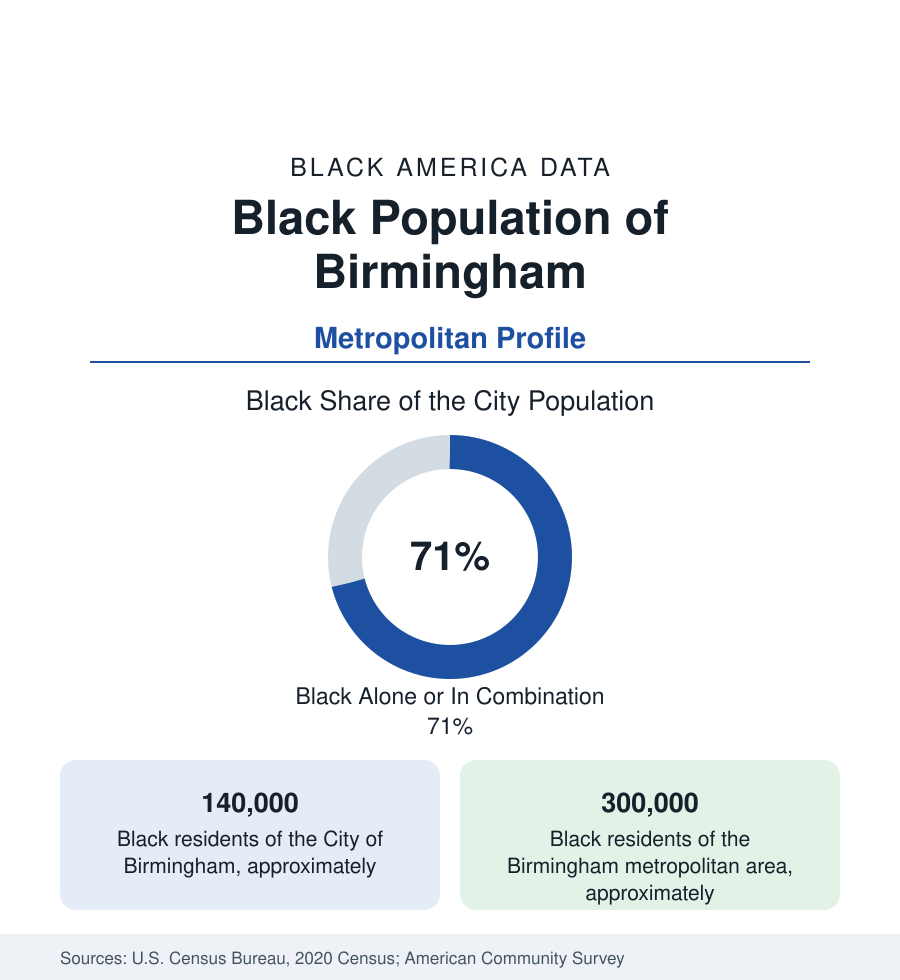

Black Cities
Black Birmingham: The Steel City's Majority
Birmingham is about seven-tenths Black — some 140,000 residents — at the center of a 300,000-person Black metro built by steel and enterprise. The census profile.

Birmingham holds about 140,000 Black residents — Black alone or in combination, roughly seven in ten of its 200,000 people — at the center of a metropolitan Black population of about 300,000, the largest in Alabama. Founded as a steel city in 1871, Birmingham built one of the South's great industrial Black communities, an enterprise tradition of national significance, and a civil-rights-era record that fixed its name in the world's memory. This article profiles the population in the census data.
Steel and the Making of Black Birmingham
Birmingham is the youngest city in this section — founded at a railroad crossing in the coal-and-iron district in 1871 — and its Black population was industrial from birth: miners in the coal camps of the district (including the convict-leased mines whose record the historians document), furnace and foundry workers in the city, and the mill towns of Bessemer, Fairfield, and Ensley where U.S. Steel's works anchored Black neighborhoods that remain majority Black today. The city's Black districts — the historic Fourth Avenue business district, Smithfield, Titusville, Enon Ridge — formed a complete civic world by the early twentieth century, with the Fourth Avenue corridor's theaters, offices, and the Masonic Temple building as its commercial heart. The 1963 movement year, centered on the downtown churches and the Sixteenth Street Baptist Church, made the city the movement's symbolic ground; the civil rights district is now a national monument and the population's defining heritage asset.
The Gaston Enterprise Tradition
Birmingham's business data carry a lineage the business section should record at city scale. A. G. Gaston built, from the 1930s onward, the South's most complete Black business empire — insurance, banking (Citizens Federal), a motel and business college, funeral homes, radio — headquartered on Fourth Avenue and deliberately constructed as institutional infrastructure. The empire's remnants and successors, alongside the city's Black contractors of the steel and construction economy, the Birmingham Times' publishing run, and the modern layer of Black firms in health care and services around the UAB medical economy, give Birmingham a Black business tradition whose depth exceeds its current scale. The Annual Business Survey's Birmingham tables show the modern position honestly: substantial counts, receipts concentrated in services and construction, and the scale ceiling the capital data describe everywhere.
The Metro's Geography
The metropolitan Black population of 300,000 distributes across Jefferson County's distinctive municipal map: the city itself (roughly 140,000 Black residents), the historically Black mill and mining cities (Bessemer, Fairfield, Brighton, Lipscomb, Midfield), the working suburbs of Center Point, Adamsville, and Forestdale, and growing homeowner communities across the county's west and north. Over the mountain — the local phrase for the affluent southern suburbs of Mountain Brook, Vestavia Hills, and Homewood — the Black shares fall to the low single digits, the metro's starkest internal contrast drawn by a single ridge. Shelby County, the growth engine to the south, records a rising Black population in the Hoover and Alabaster corridors. The university economy (UAB, the metro's largest employer) and the health system anchor the modern workforce, with Miles College in Fairfield and Lawson State carrying the community-college and HBCU layers — Birmingham is one of the few metros its size with an HBCU inside a majority-Black mill city.
Indicators and Change
Birmingham's Black indicators record the steel collapse's long half-life and the medical economy's partial answer: the city's population has declined across decades (from a 1960 peak near 340,000 to 200,000), its Black poverty rate remains difficult, and its neighborhood data span from the mill towns' hardship to the homeowner suburbs' stability within a few miles. The estimates show the metro total stable to slowly growing on the suburban corridors while the core city's count edges down — the Rust Belt pattern transplanted to the Deep South, with the difference that Birmingham's Black majority makes its municipal data Black data by definition: the city's budget, schools, and politics are the Black community's own institutions, for better and worse in the indicators alike.
Reading the Birmingham Numbers
Birmingham should be read as the industrial South's complete case: a Black majority city built by coal and steel, holding a business tradition of national standing and a heritage district of world significance, inside a metro whose wealth sits over the mountain. Its 300,000 Black residents are Alabama's center of gravity — the state's profile and this one are, in the end, one subject at two scales.
More in Black Cities
Black Atlanta: Population, Distribution, and Growth of a Black Metropolis
Metro Atlanta holds more than two million Black residents — roughly one in three, second only to New York. The suburban distribution, migration history, and composition of Black Atlanta in the census data.
Black New York: The Largest Black Population in America
The New York metropolitan area holds about 3.4 million Black residents — more than any metro in the nation — and the city itself about two million. The census profile.
Black Washington: The District and the Metro
The Washington metro holds about 1.6 million Black residents, and the District itself — long a majority-Black city — now records a Black share near 41 percent. The census profile.
Source: U.S. Census Bureau, 2020 Census; American Community Survey; Population Estimates Program.